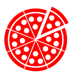

Ristorante La Palma
se nachází v bezprostřední blízkosti stanice metra Palmovka a nabízí příjemné prostředí s bohatou nabídkou nápojů a středomořské kuchyně s důrazem na italská jídla, ale i s perličkami z naší domoviny. A ke kuchyni nemohou chybět ani středomořská vína.
Nabídneme Vám
klimatizované prostory, letní zahrádku, možnost prodeje jídel s sebou, najdeme i židličku pro vaše dítě. Připravíme Vám slavnostní tabule pro Vaše výročí, jednání, ale třeba i svatbu či jinou příležitost. A nesmíme od ledna 2007 zapomenout na rozvoz jídel po Praze 2, 3, 7, 8, 9 a 10 – který pro Vás zajišťuje denně.
Každým dnem pracujeme na vylepšení jak prostředí, tak našich služeb a proto určitě přivítáme Vaše náměty, připomínky, ale i stížnosti, které nám můžete napsat na email: lapalma@lapalma.cz. Vzhledem k tomu že si opravdu zakládáme na Vaší spokojenosti, budeme se snažit jak reagovat na Vaše připomínky písemně, tak i je dle možností plnit a napravovat.